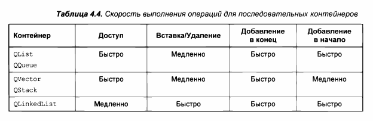

В Qt имеется несколько последовательных контейнеров. Их внутренняя реализация отличается по скорости выполнения для разных видов действий. По следующей таблице можно примерно оцентить, в каких случаях какой контейнер лучше всего использовать.

Примечание: как видно из данной таблицы, популятрый контейнер QList - это совсем не то же самое, что контейнер list в библиотеке STL. Аналогом stl::list в Qt является QLinkedList. А контейнер QList - это нечто среднее между вектором и списком, причем у него быстрый доступ к произвольному элементу (что довольно странно для списка) и при этом медленные вставка/удаление (что тоже довольно странно для списка).
По сути, отличие между QVector и QList в том, что в QList оптимизирована операция добавления в начало списка по сравнению с QVector, а в остальном они схожи.